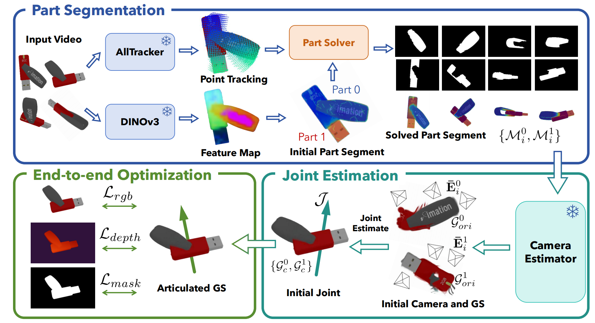

<div id="portfolio-page" class="portfolio-page-content">
    <div class="container">
        <div class="portfolio-nav">
            <div id="portfolio-close-button" class="portfolio-close-button">
                <a href="#portfolio"><i class="fa fa-close"></i></a>
            </div>
        </div>

        <div class="portfolio-title">
            <h1>[CVPR 2026] FreeArtGS: Articulated Gaussian Splatting Under Free-moving Scenario</h1>
        </div>

        <div class="row">
            <div class="col-sm-6 col-md-6 portfolio-block">
                <div class="owl-carousel portfolio-page-carousel">
                    <div class="item">
                        
                    </div>
                    <div class="item">
                        
                    </div>
                </div>

                <div class="portfolio-page-video embed-responsive embed-responsive-16by9">
                  <iframe class="embed-responsive-item" src="images/portfolio/FreeArtGS/demo.mp4"></iframe>
                </div>

                <!--
                <div class="portfolio-page-image">
                    
                </div>
                -->

                <script type="text/javascript">
                    jQuery(document).ready(function($){
                        $('.portfolio-page-carousel').owlCarousel({
                            smartSpeed:1200,
                            items: 1,
                            loop: true,
                            dots: true,
                            nav: true,
                            navText: false,
                            margin: 10
                        });
                    }); 
                </script>
            </div>

            <div class="col-sm-6 col-md-6 portfolio-block">
                <!-- Project Description -->
                <div class="block-title">
                    <h3>Description</h3>
                </div>
                <ul class="project-general-info" style="line-height: 1.2;">
                    <li><p style="margin-bottom: 5px;"><i class="fa fa-user"></i><strong>Hang Dai*</strong>, Hongwei Fan*, Han Zhang*, Jinduo Wu, Jiyao Zhang, Hao Dong</p></li>
                    <li><p style="margin-bottom: 5px;"><i class="fa fa-globe"></i> <a href="#" target="_blank">https://twin-aligner.github.io/</a></p></li>
                    <li><p style="margin-bottom: 5px;"><i class="fa fa-calendar"></i> Fall 2025</p></li>
                </ul>

                <p class="text-justify" style="line-height: 1.2;">The increasing need for augmented reality and robotics is urging for articulated object reconstruction with high scalability. However, the existing settings of reconstructing from discrete articulation states or casual monocular video need non-trivial axes alignment or suffer from insufficient coverage, limiting the applications. 
                    <br>In this paper, we introduce FreeArtGS, a novel method for reconstructing articulated objects under free-moving scenario, a new setting with a simpler setup and high scalability. FreeArtGS combines free-moving part segmentation with joint estimation and end-to-end optimization, taking only a monocular RGB-D video as input. By optimizing with the priors from off-the-shelf point-tracking and feature models, free-moving part segmentation discovers rigid parts from relative motion in unconstrained capture. The joint estimation module proposes a noise-resistant approach to recover joint type and axis robustly from part segmentation. Finally, 3DGS-based end-to-end optimization is implemented to jointly reconstruct visual textures, geometry and joint angles of the articulated object. </p>
                <!-- /Project Description -->

                <!-- Technology -->
                <div class="tags-block">
                    <div class="block-title">
                        <h3>Keywords</h3>
                    </div>
                    <ul class="tags">
                        <li><a>Real2Sim2Real</a></li>
                        <li><a>Physics-aware</a></li>
                    </ul>
                </div>
                <!-- /Technology -->

                <!-- Share Buttons -->
                <!-- <div class="btn-group share-buttons">
                    <div class="block-title">
                        <h3>Share</h3>
                    </div>
                    <a href="#" target="_blank" class="btn"><i class="fa fa-facebook"></i> </a>
                    <a href="#" target="_blank" class="btn"><i class="fa fa-twitter"></i> </a>
                    <a href="#" target="_blank" class="btn"><i class="fa fa-dribbble"></i> </a>
                </div> -->
                <!-- /Share Buttons -->
            </div>
        </div>
    </div>
</div>
